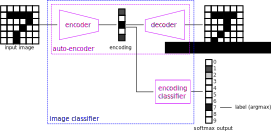

This page was generated from docs/source/examples/MNIST.ipynb.
Autoencoders and multi-stage training for MNIST classification¶
In this blog post, Francois Chollet demonstrates how to build several different variations of image auto-encoders in Keras.
We build on the example above using timeserio’s multinetwork, and demonstrate some key features:
we add a digit classifier that uses pre-trained encodings
we encapsulate a neural network with multiple inter-connected parts using
MultiNetworkBasewe show how to implement multi-stage training with layer freezing
we show how to add training callbacks and inspect multi-stage training history
[1]:
import numpy as np
import matplotlib.pyplot as plt
Load and normalize data¶
[2]:
def to_onehot(y, num_classes=10):
"""Convert numpy array to one-hot."""
onehot = np.zeros((len(y), num_classes))
onehot[np.arange(len(y)), y] = 1
return onehot
[3]:
from keras.datasets import mnist
(x_train, y_train), (x_test, y_test) = mnist.load_data()
x_train = x_train.astype('float32') / 255.
x_test = x_test.astype('float32') / 255.
y_train_oh = to_onehot(y_train)
y_test_oh = to_onehot(y_test)
Using TensorFlow backend.
[4]:
print(x_train.shape, x_test.shape, y_train.shape, y_test.shape, y_train_oh.shape, y_test_oh.shape)
(60000, 28, 28) (10000, 28, 28) (60000,) (10000,) (60000, 10) (10000, 10)
[5]:
def plot_images(x, y=None):
"""Plot all images in x, with optional labels given by y.
Expect x.shape == (n, h, w), where n = number images, h = image height, w = image width
"""
plt.figure(figsize=(20, 4))
n = x.shape[0]
for i in range(n):
image = x[i]
ax = plt.subplot(2, n, i + 1)
plt.imshow(x[i])
plt.gray()
if y is not None:
label = y[i]
plt.title(label)
ax.get_xaxis().set_visible(False)
ax.get_yaxis().set_visible(False)
plt.show()
[6]:
plot_images(x_train[:10], y_train[:10])
Define network architectures¶
We follow the above blog post closely, but demonstrate some of the convenient features of timeserio. In addition to the encoder-decoder, we add a classification model with softmax output that can be used either with image encodings, or combined with the encoder for a full image classification pipeline:

[7]:
from timeserio.keras.multinetwork import MultiNetworkBase
from keras.layers import Input, Dense, Flatten, Reshape
from keras.models import Model
from keras.callbacks import EarlyStopping, ReduceLROnPlateau
from IPython.display import SVG
from keras.utils.vis_utils import model_to_dot
[11]:
class AutoEncoderNetwork(MultiNetworkBase):
def _model(self, image_side=28, encoding_dim=32, classifier_units=32, num_classes=10):
"""Define model architectures."""
image_shape = (image_side, image_side)
flat_shape = image_shape[0] * image_shape[1]
input_img = Input(shape=image_shape, name="input_image")
encoded = Dense(encoding_dim, activation='tanh')(Flatten()(input_img))
encoder_model = Model(input_img, encoded, name="encoder")
input_encoded = Input(shape=(encoding_dim,), name="input_encoding")
decoded = Reshape(image_shape)(Dense(flat_shape, activation='sigmoid')(input_encoded))
decoder_model = Model(input_encoded, decoded, name="decoder")
autoencoder_model = Model(input_img, decoder_model(encoder_model(input_img)))
autoencoder_model.compile(optimizer='adam', loss='binary_crossentropy')
clf_intermediate = Dense(classifier_units, activation='relu')(input_encoded)
clf = Dense(num_classes, activation='softmax')(clf_intermediate)
# this model classifies encoding vectors
encoding_clf_model = Model(input_encoded, clf, name="encoder_classifier")
# this model classifies images
classifier_model = Model(input_img, encoding_clf_model(encoder_model(input_img)), name="image_classifier")
classifier_model.compile(optimizer='adam', loss='categorical_crossentropy', metrics=['categorical_accuracy'])
return {
'encoder': encoder_model,
'decoder': decoder_model,
'autoencoder': autoencoder_model,
'encoding_classifier': encoding_clf_model, # we expose this model to allow granular freezing/un-freezing
'classifier': classifier_model,
}
def _callbacks(
self,
*,
es_params={
'patience': 20,
'monitor': 'val_loss'
},
lr_params={
'monitor': 'val_loss',
'patience': 4,
'factor': 0.2
}
):
"""Define optional callbacks for each model."""
early_stopping = EarlyStopping(**es_params)
learning_rate_reduction = ReduceLROnPlateau(**lr_params)
return {
'autoencoder': [early_stopping, learning_rate_reduction],
'classifier': [early_stopping, learning_rate_reduction],
}
[12]:
multinetwork = AutoEncoderNetwork(encoding_dim=32)
[14]:
SVG(model_to_dot(multinetwork.model['encoder'], show_shapes=True).create(prog='dot', format='svg'))
[14]:
[15]:
SVG(model_to_dot(multinetwork.model['autoencoder'], show_shapes=True).create(prog='dot', format='svg'))
[15]:
[16]:
SVG(model_to_dot(multinetwork.model['classifier'], show_shapes=True).create(prog='dot', format='svg'))
[16]:
Train autoencoder¶
We see that using adam optimizer gives us a better loss compared to adadelta, even for a shallow auto-encoder
[ ]:
multinetwork.fit(
x_train, x_train,
model='autoencoder',
reset_weights=True,
epochs=100,
batch_size=2 ** 8,
shuffle=True,
validation_data=(x_test, x_test),
verbose=1,
)
Training history is stored in the multinetwork.history list. Every time we call fit, a new history record is appended. This allows us to track training history over multiple pre-/post-training runs. History includes information such as learning rate (lr) and time duration per epoch.
[18]:
from kerashistoryplot.plot import plot_history
h = multinetwork.history[-1]["history"]
plot_history(h, batches=True, n_cols=3, figsize=(15,5))

[18]:
array([<matplotlib.axes._subplots.AxesSubplot object at 0x14ab8a9e8>,
<matplotlib.axes._subplots.AxesSubplot object at 0x14acbebe0>,
<matplotlib.axes._subplots.AxesSubplot object at 0x14adbacc0>],
dtype=object)
Encode and decode some digits¶
Sweet, eh?
[19]:
encoded_imgs = multinetwork.predict(x_test, model='encoder')
decoded_imgs = multinetwork.predict(encoded_imgs, model='decoder')
[20]:
plot_images(x_test[:10], y_test[:10])
plot_images(decoded_imgs[:10])
Visualize encodings¶
We use simple PCA to visualize 32-dimensional embeddings in 2D.
[21]:
from sklearn.decomposition import PCA
[22]:
encoded_imgs_2D = PCA(n_components=2).fit_transform(encoded_imgs)
[23]:
plt.figure(figsize=(10, 10))
for label in range(10):
encodings = encoded_imgs_2D[y_test == label, :]
plt.scatter(encodings[:, 0], encodings[:, 1], alpha=.5, label=label)
plt.legend()
[23]:
<matplotlib.legend.Legend at 0x14fcc2828>
Fit classifier model¶
Using the pre-trained encoder, we can fit a classification model by training the dense layers of the encoding_classifier model only.
[ ]:
multinetwork.fit(
x_train, y_train_oh,
model='classifier', # this is the compiled model we use to perform gradient descent
trainable_models=['encoding_classifier'], # only the layers in this model will be un-frozen
epochs=100,
batch_size=2 ** 8,
shuffle=True,
validation_data=(x_test, y_test_oh),
verbose=1,
)
Training history¶
Note that multinetwork.history now contains two records: one for the autoencoder pre-training, and one for post-training the dense layers. By freezing the encoder, we also speed up classifier post-training significantly.
[25]:
pre_training = multinetwork.history[0]
print(f"Training model: {pre_training['model']}, trainable: {pre_training['trainable_models']}")
Training model: autoencoder, trainable: ['encoder', 'decoder', 'autoencoder', 'encoding_classifier', 'classifier']
[26]:
plot_history(pre_training["history"], batches=True, n_cols=3, figsize=(15,5))
[26]:
array([<matplotlib.axes._subplots.AxesSubplot object at 0x14de17208>,
<matplotlib.axes._subplots.AxesSubplot object at 0x14b01d208>,
<matplotlib.axes._subplots.AxesSubplot object at 0x14b3de4e0>],
dtype=object)
[27]:
post_training = multinetwork.history[1]
print(f"Training model: {post_training['model']}, trainable: {post_training['trainable_models']}")
Training model: classifier, trainable: ['encoding_classifier']
[28]:
plot_history(post_training["history"], batches=False, n_cols=2, figsize=(15,5))
[28]:
[<matplotlib.axes._subplots.AxesSubplot at 0x152519518>,
<matplotlib.axes._subplots.AxesSubplot at 0x152588eb8>,
<matplotlib.axes._subplots.AxesSubplot at 0x1525bb128>,
<matplotlib.axes._subplots.AxesSubplot at 0x152603550>]
Final classifier score¶
Our classifier performance is not ground-breaking, but our example show a simple way to implement multi-stage training using a multinetwork.
[29]:
loss, acc = multinetwork.evaluate(x_test, y_test_oh, model='classifier')
print(f"Loss: {loss:.3f}, accuracy: {acc:.3f}")
Loss: 0.113, accuracy: 0.967
Some examples¶
We plot original images from the test set with their true labels on top, and decoded images with classifier labels on the bottom.
[30]:
y_test_pred_oh = multinetwork.predict(x_test, model='classifier')
y_test_pred = np.argmax(y_test_pred_oh, axis=1)
[34]:
n = 20
idx = np.random.choice(len(x_test), size=n, replace=False)
[35]:
print("True labels: ")
plot_images(x_test[idx], y_test[idx])
print("Predicted labels: ")
plot_images(decoded_imgs[idx], y_test_pred[idx])
True labels:
Predicted labels:
[ ]: